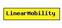

File: Mobility/LinearMobility.ned
C++ definition: click here
This is a linear mobility model with speed, angle and acceleration parameters. Angle only changes when the mobile node hits a wall: then it reflects off the wall at the same angle.
See also: ChannelControl
Author: Emin Ilker Cetinbas
The following diagram shows usage relationships between modules, networks and channels. Unresolved module (and channel) types are missing from the diagram. Click here to see the full picture.
| Name | Type | Description |
|---|---|---|
| debug | bool | debug switch |
| x | numeric const | start x coordinate (-1 = display string position, or random if it's missing) |
| y | numeric const | start y coordinate (-1 = display string position, or random if it's missing) |
| speed | numeric const | speed of the host (in m/s) |
| angle | numeric const | angle of linear motion (degreees) |
| acceleration | numeric const | acceleration of linear motion (m/s2) |
| updateInterval | numeric const | time interval to update the hosts position |
simple LinearMobility parameters: debug : bool, // debug switch x: numeric const, // start x coordinate (-1 = display string position, or random if it's missing) y: numeric const, // start y coordinate (-1 = display string position, or random if it's missing) speed: numeric const, // speed of the host (in m/s) angle: numeric const, // angle of linear motion (degreees) acceleration: numeric const, // acceleration of linear motion (m/s2) updateInterval : numeric const; // time interval to update the hosts position endsimple